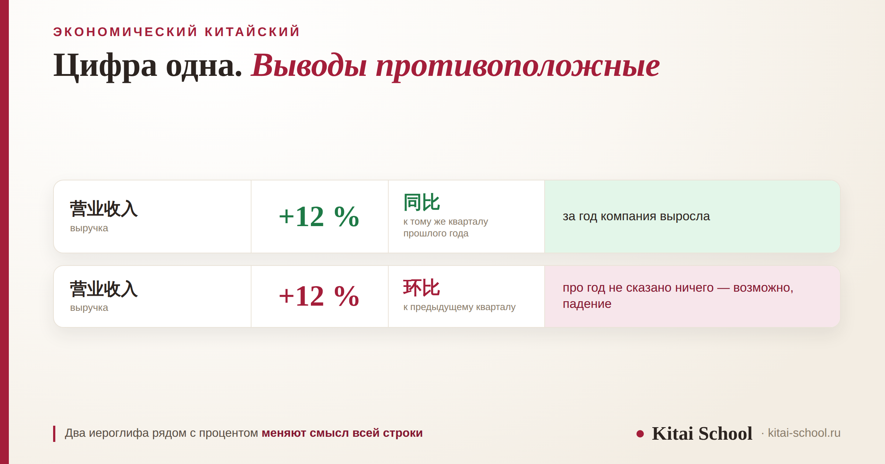
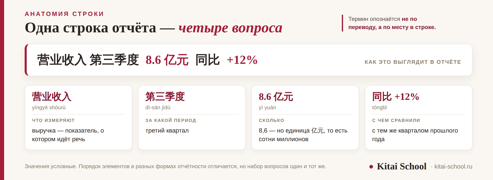

Выбор программы
Курс по экономическому китайскому: чек-лист по выбору программы и чем он отличается от делового


Если по работе вы открываете китайский отчёт или прайс и прогоняете его через машинный перевод, курс по экономическому китайскому решает именно эту задачу. Но покупать его стоит с открытыми глазами: это язык не разговора, а чтения, и главная трудность здесь не в длине словаря. Разберём, чем он отличается от делового китайского, какие тексты придётся читать на самом деле, где чаще всего ошибаются с цифрами и по каким шести пунктам проверяют программу.
Экономический китайский — язык чтения, а не переговоров: отчётность, сводки, аналитика. Главная ошибка не в словах, а в цифрах: 同比 и 环比 меняют смысл одного и того же процента на противоположный. Зубрёжка словаря не работает, потому что термин опознаётся по месту в таблице, а не по переводу. За первые недели меняется одно — вы начинаете понимать, о чём строка. Разумный старт — уверенный HSK 4.
Чем экономический китайский отличается от делового
Разница простая и определяет всё остальное. Деловой китайский — язык общения: поздороваться, обсудить условия, отказать так, чтобы не испортить отношения, написать письмо. Этому посвящены отдельные разборы: китайский язык для бизнеса и 50 фраз для делового общения.
Экономический китайский — язык чтения. Говорить на нём почти не нужно. Нужно открыть документ, который писали не для вас, и понять, что в нём написано. Причём основное содержание там несут не слова, а цифры, единицы измерения и пометки о том, с чем эти цифры сравнивают.
Отсюда следует практический вывод: курс, где вас учат вести переговоры о цене, не решает задачу чтения отчёта. И наоборот. Это разные навыки, и покупать надо тот, который нужен.
Что читают на самом деле: три типа текстов
Под «экономическим китайским» обычно скрывается один из трёх наборов. Полезно понять свой до того, как платить.
| Что читаете | Примеры | Главная трудность |
|---|---|---|
| Отчётность компании 财报 cáibào | баланс, отчёт о прибылях, презентация для инвесторов | структура таблицы и единицы: одна строка несёт сразу несколько чисел |
| Отраслевые сводки | обзоры рынка, данные по производству, тендерная документация | отраслевые термины, которых нет в общих словарях |
| Новости и аналитика | деловые СМИ, макроэкономические обзоры | устойчивые обороты и сокращения, понятные читателю-китайцу без расшифровки |
Сложность растёт сверху вниз, но начинать логично с первого: у отчётности жёсткая структура, она повторяется из документа в документ, и освоив одну форму, вы читаете все похожие.
同比 и 环比: два слова, которые меняют смысл цифры
Это главное место, где ошибаются, и ошибаются дорого. В китайских отчётах рядом с процентом почти всегда стоит пометка о базе сравнения, и пометок две.
| Пометка | С чем сравнивают | Формула |
|---|---|---|
| 同比 tóngbǐ | с тем же периодом прошлого года | (текущий − прошлогодний) ÷ прошлогодний × 100 % |
| 环比 huánbǐ | с предыдущим периодом: месяц к месяцу, квартал к кварталу | (текущий − предыдущий) ÷ предыдущий × 100 % |
Разница не косметическая. 同比 убирает влияние сезона и показывает долгий тренд: декабрь сравнивается с декабрём, а не с ноябрём, когда продаж по природе меньше. 环比 показывает краткосрочную динамику и отвечает на вопрос «что происходит прямо сейчас».
В сезонном бизнесе эти две цифры могут указывать в разные стороны: по 同比 компания растёт, по 环比 падает — и оба утверждения верны. Прочитали одно вместо другого — получили обратный вывод о поставщике.

Рабочий минимум: что должно быть в словаре
Терминов в экономике много, но опорных — немного. Вот тот набор, без которого не прочитать ни одного отчёта.
| Иероглифы | Пиньинь | Значение |
|---|---|---|
| 财报 | cáibào | финансовый отчёт |
| 营业收入 | yíngyè shōurù | выручка |
| 净利润 | jìng lìrùn | чистая прибыль |
| 毛利率 | máolìlǜ | валовая рентабельность |
| 产能 | chǎnnéng | производственная мощность |
| 汇率 | huìlǜ | валютный курс |
| 关税 | guānshuì | пошлина |
| 通货膨胀 | tōnghuò péngzhàng | инфляция |
| 国内生产总值 | guónèi shēngchǎn zǒngzhí | ВВП |
Обратите внимание на устройство: 营业收入 — это «операционный доход», 净利润 — «чистая прибыль», и в обоих вторая часть сообщает тип показателя, а первая его уточняет. Разобравшись с десятком таких пар, остальные вы начнёте разбирать по составу, а не искать целиком.
Где чаще всего ошибаются
Четыре ошибки, которые встречаются постоянно и стоят дороже всего.
- Путают базу сравнения. Берут процент, не посмотрев, стоит рядом 同比 или 环比, и делают вывод о динамике. Это ошибка номер один.
- Принимают рентабельность за прибыль. 毛利率 — доля в процентах, а не сумма. Высокая рентабельность при падающей выручке означает совсем не то, что кажется.
- Теряют единицы. В китайских таблицах суммы часто даны в 万元 или 亿元, и пометка стоит один раз в шапке. Как устроен счёт на 万 и 亿 и почему на нём ошибаются дороже всего, разобрано отдельно: китайский язык для бизнеса.
- Переводят термин буквально. У большинства показателей есть принятый русский эквивалент, а дословный перевод даёт неверный результат. Та же беда с договорами — об этом в разборе юридический китайский.
Ко мне обратилась закупщица, которая выбирала между двумя китайскими поставщиками. Один прислал презентацию с цифрами, и по ней выходило, что компания уверенно растёт: везде стояли проценты со знаком плюс.
Мы открыли документ вместе. Рост действительно был — но все проценты шли с пометкой 环比, то есть к предыдущему кварталу. А рядом, мелким шрифтом в примечании, стояли цифры 同比: к тому же кварталу прошлого года выручка снизилась.
Презентация не врала. Она просто вынесла вперёд то сравнение, которое выглядело лучше, — приём, известный в любой стране. Разница в том, что по-русски такую пометку замечают, а в китайском документе её сначала надо уметь прочитать.
Почему зубрёжка словаря не работает
Это главная причина, по которой люди учат термины месяцами и всё равно открывают переводчик.
Термин в отчёте опознаётся не по переводу, а по месту в таблице. Выученное в списке слово «выручка» мало помогает, когда оно стоит в графе сразу за два периода, с единицей измерения в шапке и пометкой о базе сравнения сбоку. Вы знаете слово — и всё равно не понимаете строку.
Работает другое: разбирать настоящие документы целиком. Не список из тридцати терминов, а один реальный отчёт, в котором эти термины стоят на своих местах. После трёх-четырёх разобранных отчётов одного типа четвёртый читается почти сам — структура везде одна.
Есть и вторая причина, менее очевидная. В экономическом тексте много слов, которые вы и так знаете, но в другом значении. 走 — это не только «идти», в отчёте оно встретится в оборотах про движение показателя; 面 в обычной речи «сторона», а в сводке — «сегмент». Словарь на такие случаи не срабатывает: он даёт первое значение, и человек читает фразу уверенно и неправильно.
Отсюда простой признак хорошего курса: на занятиях открывают настоящие документы, а не учебные тексты, написанные специально для студентов. И второй признак — вам показывают не только новые термины, но и знакомые слова в новом значении.
Чего ждать от первых недель
Скажу прямо, потому что обещания тут обычно щедрые. За первые недели меняется ровно одно: вы начинаете узнавать термины в отчёте и понимать, о чём строка, не прогоняя весь документ через перевод.
Это немало: именно на этом шаге документ перестаёт быть сплошным набором незнакомых знаков и становится таблицей, в которой понятно, куда смотреть. Дальше скорость растёт сама, потому что формы отчётности повторяются.
Чего за первые недели не происходит: свободного обсуждения условий на китайском, чтения аналитики без словаря, понимания отраслевых сокращений. Это приходит позже и требует другого объёма работы.
Разница между «узнаю слово» и «владею языком» — тема отдельного разбора, и она касается любых быстрых обещаний: что стоит за обещаниями быстрых курсов.
Что должно быть в программе: шесть пунктов
| Пункт | Зачем |
|---|---|
| Настоящие документы | отчёты и прайсы реальных компаний, а не тексты, составленные для учебника |
| Работа со структурой таблицы | не только слова, но и как устроена строка: показатель, период, единица, база |
| Цифры и единицы отдельной темой | 万, 亿, проценты, 同比 и 环比 — там, где теряют деньги |
| Материалы вашей отрасли | лексика закупок, производства и финансов различается; общий курс закрывает задачу наполовину |
| Разбор ошибок на ваших документах | преподаватель смотрит, как вы прочитали реальный файл, и показывает, где вывод разошёлся с текстом |
| Понятный объём | программа говорит, сколько документов вы разберёте, а не обещает снять барьер |
Если компания учит сразу нескольких сотрудников, формат и бюджет считаются иначе — об этом в разборе корпоративный китайский. Соседние профобласти устроены по той же логике: курс по логистике и курс по маркетингу.
С какого уровня начинать
Разумный ориентир — уверенный четвёртый уровень HSK. К этому моменту есть грамматика и словарный запас, на которые ложится терминология, и чтение перестаёт быть расшифровкой. Что идёт дальше по уровням, видно в разборе HSK 5.
Начать можно и раньше, если задача узкая: читать прайсы и спецификации одного поставщика. Такой набор конечен — несколько десятков позиций, которые повторяются в каждом документе, — и его осваивают быстро. А вот весь массив отчётности на слабой базе превращается в заучивание иероглифов без понимания — и это самый дорогой способ потратить время.
И последнее: язык решает не всё. Как устроено само общение с китайской стороной — в разборе бизнес-этикет в Китае.
Нужно читать отчёты поставщика или вести переписку по сделкам? Принесите на первое занятие свой документ — посмотрим, что в нём непонятно, и скажем, сколько займёт задача. Для компаний есть корпоративное обучение. Оставить заявку или написать в Telegram.
Частые вопросы (FAQ)
Что такое экономический китайский и чем он отличается от делового?
Деловой китайский — это язык общения: встреча, переговоры, переписка. Экономический китайский — язык чтения: финансовая отчётность, отраслевые сводки, деловые новости и аналитика. Задачи разные: в первом случае надо говорить и писать самому, во втором — понимать чужой текст, в котором главное содержание несут цифры и единицы измерения.
Нужен ли отдельный курс по экономическому китайскому?
Он нужен, если по работе вы читаете китайские отчёты, прайсы, тендерную документацию или сводки и сейчас делаете это через машинный перевод. Если же ваша задача — переговоры и переписка, отдельный экономический курс не нужен: это другой набор навыков, и начинать стоит с делового китайского.
В чём разница между 同比 и 环比?
同比 (tóngbǐ) сравнивает показатель с тем же периодом прошлого года, 环比 (huánbǐ) — с предыдущим периодом: месяц к месяцу, квартал к кварталу. Формулы разные, и выводы тоже: 同比 убирает влияние сезона и показывает долгий тренд, 环比 показывает краткосрочную динамику. В сезонном бизнесе две эти цифры могут указывать в противоположные стороны.
Почему зубрёжка словаря не работает на реальных документах?
Потому что термин в отчёте опознаётся не по переводу, а по месту в таблице. Выученное в списке слово «выручка» не помогает, когда оно стоит в графе за два периода сразу, с единицей 万元 и пометкой о базе сравнения. Работает другое: разбирать настоящие отчёты целиком, понимая, как устроена строка и что с чем сопоставлено.
Что реально меняется за первые недели занятий?
Одно: вы начинаете узнавать термины в отчёте и понимать, о чём строка, — без сплошного перевода. Чего за первые недели не происходит: свободного обсуждения условий на китайском и чтения аналитики без словаря. Обещания снять языковой барьер за несколько недель относятся не к владению языком, а к узнаванию знакомых слов.
С какого уровня можно начинать экономический китайский?
Разумный ориентир — уверенный четвёртый уровень HSK: к этому моменту есть грамматика и база, на которую ложится терминология. Можно начать и раньше, если задача узкая: например, читать только прайсы и спецификации одного поставщика. Но весь массив отчётности на слабой базе превращается в заучивание иероглифов без понимания.
Дальше по теме: лексика переговоров и переписки — китайский язык для бизнеса; готовые реплики для встречи — 50 фраз для делового общения; соседние профобласти — логистика и маркетинг.
Источники
- Справочные материалы по китайской финансовой терминологии: определения и формулы расчёта 同比 и 环比, состав показателей отчётности.
- Практика Kitai School — разбор рабочих документов с учащимися и корпоративными группами.
- Оговорка: состав терминов различается по отраслям, а формы отчётности — по типу компании. Чек-лист программы — наш рабочий ориентир, а не отраслевой стандарт. Уровень HSK 4 назван как типичная отправная точка, а не как требование.
Пусть цифры читаются с первого взгляда! 马到成功！